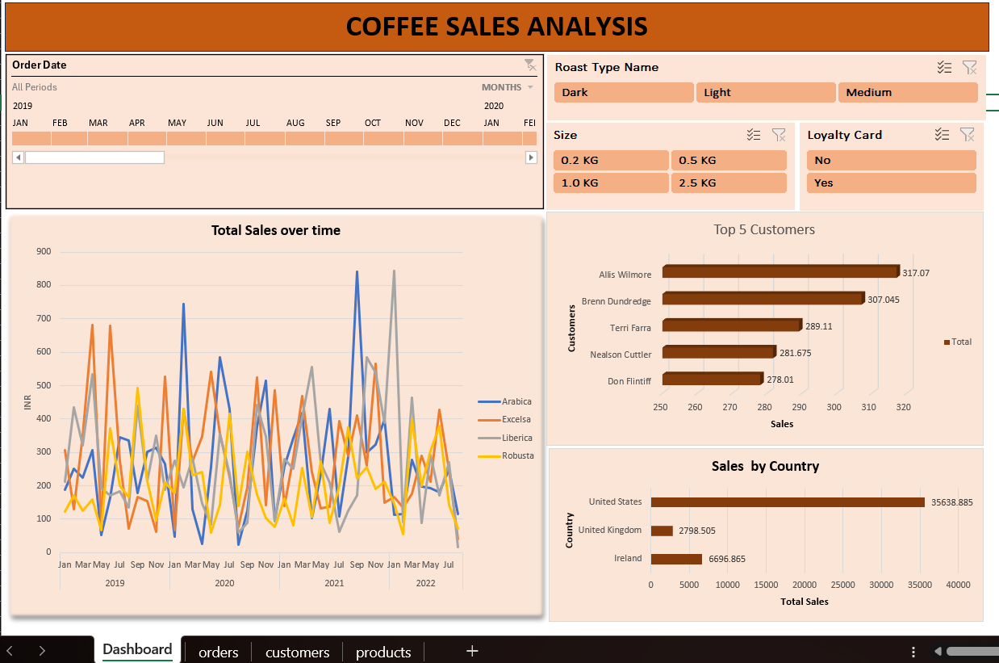

Interactive Excel dashboard built using Pivot Tables, Pivot Charts, Slicers and Business Analytics techniques.
This dashboard analyzes coffee sales performance across customers, countries, roast types and product sizes. The objective was to provide management with an interactive reporting solution for sales tracking and customer insights.
Track revenue performance over time.
Identify highest value customers.
Compare sales across markets.
Analyze roast types and package sizes.

The dashboard provides dynamic filtering using slicers for roast type, size, loyalty card status and date. Users can drill into sales trends, customer performance and country-level analysis in real time.